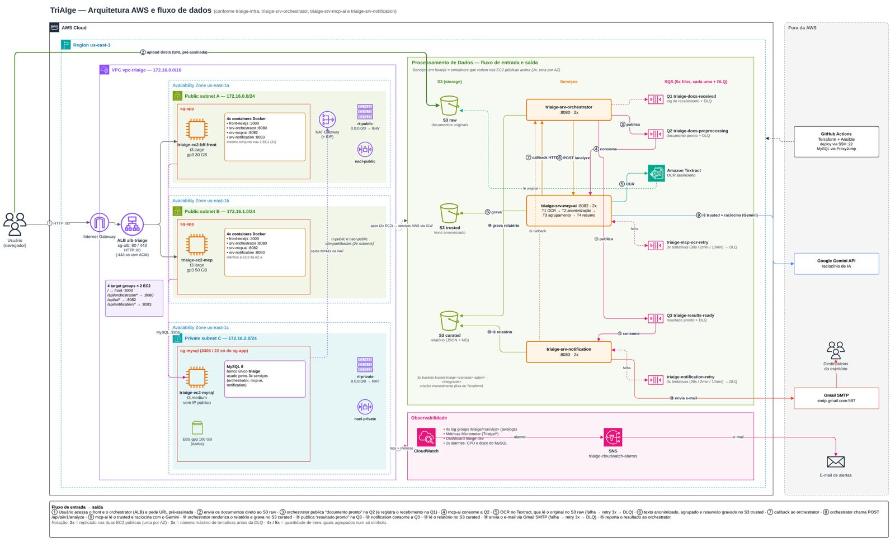

Triagem e análise inicial são majoritariamente manuais e feitas diariamente por muitos profissionais.
SISTEMAS DE INFORMAÇÃO
TriAIge
A solução que usa IA e arquitetura em nuvem para resumir, classificar e sugerir a prioridade de casos para revisão dos escritórios jurídicos.
Gabriel Nunes · Gabriel Schiavo · Gyulia Piqueira
Kaori Katayama · Miguel Araujo
VAMOS PENSAR JUNTOS
Quantos documentos precisam ser analisados antes de um escritório conseguir uma decisão? E quanto tempo é necessário para isso?
O TAMANHO DO DESAFIO
Um mercado com alto volume de demandas jurídicas
40,9 mi
processos novos no Brasil em 2025 (maior volume desde 2009)
75,5 mi
processos em andamento em 2025
(1 processo para cada 3 brasileiros)
50 mil
escritórios de advocacia inscritos na OAB SP
Como podemos transformar esse volume de dados em informação organizada e prioridades claras?
CNJ · Justiça em Números 2026, ano-base 2025 · OAB SP em números
CONTEXTO E PROBLEMA
Alta demanda, baixa automação: a triagem ainda é manual
Horas de profissionais qualificados vão para tarefas repetitivas,
com retrabalho e
baixa
escalabilidade.
A digitalização dos processos cresceu e o uso de IA nos escritórios
para análise,
classificação e resumo dos documentos já avança,
porém sem controle eficiente dos
dados compartilhados.
Frequência de triagem jurídica na amostra
Diariamente45,9%
Semanalmente32,4%
Ocasionalmente10,8%
Raramente5,4%
Nunca5,4%
81% dos profissionais dizem que o volume de documentos afeta a produtividade.
Pesquisa de campo TriAIge, 2026 - 37 profissionais do Direito respondendo à pesquisa. - LEGALE, 2026 - JUSBRASIL, 2024
FOCO DO PROJETO
E se a tecnologia pudesse fazer a etapa inicial do processo?
A triagem jurídica consiste na análise inicial de um caso, envolvendo a avaliação, classificação e priorização dos documentos e demandas.
Ler, entender o contexto e classificar cada caso.
Documentos e informações chegam de formas diferentes.
Datas e informações relevantes exigem atenção.
Conhecimento individual e dados dispersos dificultam a gestão.
Dores mapeadas no TCC e nos materiais do grupo.
SOLUÇÃO E DIFERENCIAL
Uma primeira análise organizada para revisão
Documento
O escritório envia o caso pelo canal configurado por ele, integrado à TriAIge.
A solução é agnóstica ao canal de entrada, integrando-se a diferentes meios utilizados pelo escritório, como e-mail, WhatsApp, CRM.
TriAIge
Anonimiza, classifica, resume e evidecia prazos e as informações mais importantes.
Anonimização: nomes, CPFs, endereços e outros dados pessoais são removidos ou substituídos antes de o texto chegar à IA.
Entrega
O relatório é disponibilizado para validação e revisão pelo profissional responsável.
A análise final e a utilização dos resultados são de responsabilidade do cliente, sem retorno de feedback à ferramenta.
A TriAIge fornece anonimização, triagem inteligente, restreabilidade de operações e observabilidade de documentos jurídicos, unindo eficiência operacional, governança, segurança e conformidade com a LGPD.
VALOR E GOVERNANÇA
Mais produtividade e inteligência na tomada de decisão
A TriAIge transforma documentos em informações estruturadas, permitindo que os profissionais operem de forma mais estratégica, ágil, organizada e segura.
Menos tempo para ler e organizar documentos
Mais eficiência na classificação e priorização
Mais controle sobre processamento e rastreabilidade
Mais segurança de informações durante o processamento
A IA prepara. O profissional decide.
PERSONAS E EXPERIÊNCIA
Menos leitura repetitiva, mais foco no caso
Lucas Mendes
Advogado júnior · 25 anos
“Menos tempo lendo e organizando documentos, mais tempo analisando o que importa.”
Hoje
Uma fila de documentos para ler.
Com a TriAIge
Resumo e prioridade para organizar a revisão.
Carla Souza
Advogada autônoma · 40 anos
“Só confio na IA se ela mostrar de onde vem cada informação e proteger os dados dos meus clientes.”
Hoje
Pouco tempo e receio de expor dados.
Com a TriAIge
Acompanhamento do caso e rastreabilidade.
VISÃO TÉCNICA
O documento passa por quatro etapas dentro da TriAIge
-
Recebimento
Valida os documentos do escritório e guarda o original.
Amazon S3 -
Preparação
Extrai o texto, normaliza e anonimiza os dados.
OCR da AWS -
Análise
Analisa o texto anonimizado e gera a triagem do caso.
Gemini -
Entrega
Envia o relatório final e encerra a triagem.
Relatório e notificação
A anonimização acontece antes do envio do conteúdo ao modelo.
ARQUITETURA
Infraestrutura proposta na AWS
1 / 4

Arquitetura atual enviada pelo grupo · Passe o mouse pelas etapas ou use as setas.
DEMO 1
Triagem · envio de documentos jurídicos e notificação
DEMO 2
Monitoramento e métricas de negócio
MODELO DE NEGÓCIO
Assinatura por escritório e implantação inicial
ESSENCIAL
R$ 490/mês
100 unidades · 2 usuários
E-mail, Web e formulário
PROFISSIONAL
R$ 1.290/mês
500 unidades · 5 usuários
E-mail, Web, WhatsApp e API
CORPORATIVO
R$ 3.500/mês
1.000 unidades · 15 usuários
Multicanal e CRM homologado
Os planos se diferenciam pela quantidade de usuários, volume de documentos processados e canais de atendimento e integração disponibilizados.
A precificação considera também os custos operacionais, incluindo infraestrutura em nuvem, processamento e mão de obra técnica necessária para implantação, suporte e integração com o cliente.
Implantação: R$ 2.000 + mensalidade. 1 unidade = até 10 páginas. Franquia mensal, sem acúmulo ou excedente automático. Regras no botão ⓘ.
Preços do BC · Franquias, canais e condições propostos para validação em piloto.
VIABILIDADE COMERCIAL · CAPITAL
Capital necessário para lançar e escalar a TriAIge
NECESSIDADE PROJETADA DE
FINANCIAMENTOR$ 1,22 mi
Cobertura do maior saldo negativo acumulado, previsto no Ano 2.
Financia a preparação do produto e a operação até a receita cobrir as saídas. Sem reserva para imprevistos.Despesas do Ano 0 para preparar o produto antes das vendas.
Estrutura baseada em nuvem, equipamentos alugados e equipe alocada como despesa operacional.
Equipe e operação
Desenvolvimento, evolução do produto e sustentação.
Tecnologia e processamento
Nuvem AWS, armazenamento, IA/APIs e monitoramento.
Estrutura e comercial
Equipamentos alugados, operação e aquisição de clientes.
BC atualizado · Ano 0: R$ 432 mil · OPEX 0–5: R$ 7,25 mi · Aporte cobre o déficit, sem reserva adicional.
VIABILIDADE COMERCIAL · RETORNO
O cenário projeta recuperação do capital no Ano 5
Momento em que o caixa acumulado se torna positivo.
Valor presente dos fluxos após descontar o custo do capital de 18% ao ano.
Retorno projetado acima da taxa mínima de 18% ao ano.
Pela fórmula do cenário, cada R$ 100 de custo considerado gera R$ 19,71 de ganho líquido no horizonte.
Os fluxos líquidos positivos somam 2,17 vezes os fluxos líquidos negativos do projeto.
BC atualizado · Indicadores projetados · TMA de 18% a.a. · Payback simples.
VIABILIDADE COMERCIAL · EVOLUÇÃO DO CAIXA
Do investimento inicial à geração de caixa
Cenário projetado · Ano 0 ao Ano 5
Ano 2: déficit máximo de R$ 1,22 mi · Ano 3: fluxo anual positivo · Ano 5: acumulado de R$ 1,43 mi.
BC atualizado · Cenário-base, fluxos após impostos · Projeções sujeitas a vendas e custos.
VIABILIDADE TÉCNICA · TESTES E RISCOS
Desempenho testado e condições para escalar
150usuários no pico testado
35,8 req/svazão no pico
0%erros HTTP no teste de degraus
Resposta sob carga
Mediana: 281 ms · p95: 2.359 ms.
OCR, Gemini e e-mail desligados. Não mede capacidade máxima.
Fluxo completo e pontos de atenção
Dois casos notificados em 27,0 s e 32,4 s; um terceiro travado na fila.
Ajustes: corrigir publicação na fila e paginar a lista do admin.
Testes de 05/11/2026 · Resultados por cenário; não comprovam o SLA mensal.
Dependência da IA
Como mitigarProvedor alternativo e alertas de consumo.
Anonimização
Como mitigarMedir falsos negativos e segregar auditoria.
Segurança dos canais
Como mitigarRotação de credenciais e testes de segurança.
Prazos processuais
Como mitigarRegras determinísticas e revisão humana.
Testes de 05/11/2026 · Resultados por cenário; não comprovam o SLA mensal.
INDICADORES DE SUCESSO E SLA
Metas para uma triagem ágil e confiável
Tempo médio de triagem
Do recebimento à geração do relatório.
Processamento ponta a ponta
Casos concluídos sem reprocessamento.
SLA mensal da API
Até 43min12 de indisponibilidade em 30 dias.
> 95%Precisão de OCR/IA
< 5%Retrabalho
98,5%Sucesso de envio
0Incidentes de exposição de dados
Metas propostas, ainda não comprovadas. Qualidade exige avaliação controlada.
VIABILIDADE COMERCIAL
Riscos financeiros e controle de custos
Custo fixo antes da escala
Como mitigarContratar por etapas, acompanhar o caixa mensal e revisar metas de aquisição.
Dependência do mix de planos
Como mitigarValidar preços e conversão por plano em piloto e simular um mix conservador.
Consumo de IA e APIs
Como mitigarMedir custo por caso, limitar tentativas e alertar sobre consumo e reajustes.
Infraestrutura variável
Como mitigarAplicar orçamento com alertas, política de retenção e cenários de câmbio e carga.
Riscos dos materiais financeiros enviados pelo grupo. O controle do caixa, da aquisição e do consumo sustenta as premissas de retorno do cenário.
CONCLUSÃO
Menos tempo na triagem.
Mais foco na decisão jurídica.
A TriAIge transforma documentos em uma primeira análise organizada, rastreável e pronta para revisão.
TRIAIGE
O que vocês gostariam de saber sobre a TriAIge?
Gabriel Nunes · Gabriel Schiavo · Gyulia Piqueira
Kaori Katayama · Miguel Araujo